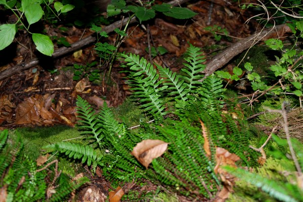

APPennino
Flora
Lungo il percorso osserviamo diverse felci proprio per l’ambiente umido e ombroso. Qui troviamo una bella stazione in cui sono presenti la lingua cerina (Phyllitis Scolopendrium ),
la falsa liquirizia (Polypodium Vulgare ) e il falso capelvenere (Asplenium Trichomanes ).

Segnaliamo all'interno del percorso specie come biancospino (Crataegus Monogyna )
e il ginepro comune (Juniperus Communis ).
Letteratura per approndimento
LA VEGETAZIONE DEL SISTEMA FLUVIALE LIMA - SERCHIO
(TOSCANA SETTENTRIONALE) Pera Papini e Virgilio Arrigoni Parlatorea Rivista aperiodica del Laboratorio di fitogeografia Università di Firenze
LA CARTA DELLA VEGETAZIONE DEL SIC ALTA VALLE DEL SESTAIONE (PISTOIA, TOSCANA NORD - OCCIDENTALE) Bruno Foggi et al, Parlatorea Rivista aperiodica del Laboratorio di fitogeografia Università di Firenze
LA VEGETAZIONE NELLA VALLE DEL TORRENTE VERDIANA.., Foggi, B., Lastrucci, L., Papini, P. Vergari, S., Gennai, M., Gervasoni, D., Viciani, D. & Ferretti, G.,Vegetation of the Verdiana River valley in the northern Apennines, Italy, Lazaroa 32: 153-178 (2011).